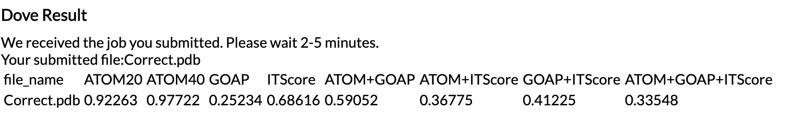
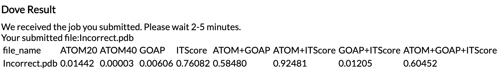

A Deep-learning based dOcking decoy eValuation mEthodWhat is Dove?
A Deep-learning based dOcking decoy eValuation mEthodWhat is Dove?(1) Dove is a protein docking model evaluation method, which distinguish good quality (acceptable quality in the CAPRI-criteria) from incorrect models. It is trained on around 2 million examples.
(2) Compared to previous methods, it worked better on two different benchmark datasets, Zdock and Dockground.
(3) In the cross-fold testing we conducted, we achieve around 85% accuracy on training set and around 70% accuracy on the validation set.
Dove protocol(1) Dove computes and assigns GOAP and ITScore to each atom in a query docking model. GOAP and ITScore is knowledge-based potentials used in protein structure prediction.
(2) As another type of input feature, Dove extracts the interface atom types and positions at the docking interface.
(3) The query model is mapped on to a 3D grid, and GOAP, ITScore, and atom type information are mapped to each voxel. These are input features for the evaluation.
(4) The deep learning trained model was applied to predict the the probability of the input model (decoy) being correct (an acceptable model with the CAPRI criteria). 1.0 is the highest score and 0.0 is the lowest. It applied 8 networks, each of which considers different features of the input decoys. Thus, Dove outputs 8 probability values.
How to use the platform?(1) Prepare a PDB file of a protein complex to evaluate. The receptor chain ID should be A while ligand chain ID should be B.
(2) Upload the file and submit. The result will show up after about 3 minutes. Please click refresh if you don't find the update after 3 minutes. Occasionally, a job can take longer.
(3) Receive and read the output. It has the following formats (values and the file name are examples):
complex.244440.pdb,0.80237,0.79943,0.90355,0.78516,-1.00000,-1.00000,0.91417,0.75000
(Explanation: 1st column is the file name, 2nd-9th column denotes the probability of the decoy is correct (acceptable quality according to CAPRI). If the value is -1, it means the model is not evaluated using the corresponding features.)
Here is an example output of a correct decoy:  As you see in this example typically a correct decoy has a high probability (>0.5) from more than four feature combinations and no very small probability (< 0.01). Here is an example output of an incorrect decoy:  Typically an incorrect decoy has at least one very small probability (< 0.01).
Here is a detailed table to explain the meaning of different input features.
| ATOM20 | Input based on atom types and locations in a 203 A3 cube in the interface area (within 10 A), in which the cube center is the interface area center |
| ATOM40 | Input based on atom types and locations in a 403 A3 cube in the interface area (within 10 A), in which the cube center is the interface area center |
| GOAP | Input based on atoms' GOAP energy scores in a 403 A3 cube in the interface area (within 10 A), in which the cube center is the interface area center |
| ITScore | Input based on atoms' ITScore energy scores in a 403 A3 cube in the interface area (within 10 A), in which the cube center is the interface area center |
| ATOM+GOAP | Input based on atom types, locations and atoms' GOAP energy scores in a 403 A3 cube in the interface area (within 10 A), in which the cube center is the interface area center |
| ATOM+ITScore | Input based on atom types, locations and atoms' ITScore energy scores in a 403 A3 cube in the interface area (within 10 A), in which the cube center is the interface area center |
| GOAP+ITScore | Input based on atoms' ITScore and GOAP energy scores in a 403 A3 cube in the interface area (within 10 A), in which the cube center is the interface area center |
| ATOM+GOAP+ITScore | Input based on atom types, locations and atoms' GOAP and ITScore energy scores in a 403 A3 cube in the interface area(within 10A), in which the cube center is the interface area center |